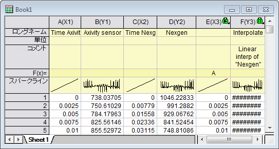
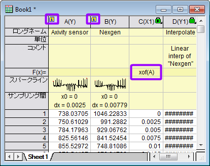

最終更新日：2019/10/17
Originの補間ツールを使用して、異なるサンプリング間隔で記録された2つのセンサー信号を同期できます。ワークシートに2つの信号（X1、Y1、X2、Y2）の4つの列があり、X1と同じサンプリング間隔の2つの信号が必要だとします。はじめに右端に新規の列を追加し、列の属性をXに設定し、列を右クリックしてショートカットメニューから列値の設定を選択します。開いたダイアログでAと入力してX1のコピーを作成します。Originのメニューから解析：数学：補間/補外（XからYを検索）を選択し、補間するX値に新規の列を、入力にX2Y2を設定します。 作成されたY3 (F列) はY1と同じサンプリング間隔を持ちます。

サンプリング間隔を持つ2つのY列の2つの信号がある場合は、はじめに右端に新規の列を追加し、列の属性をXに設定し、列を右クリックしてショートカットメニューから列値の設定を選択します。開いたダイアログでxof(A)と入力してY1（A列）Xのコピーを作成します。上記の手順と同様にして、Y1 (A列) と同じサンプリング間隔を持つY3 (D列) を作成できます。

キーワード:同期, サンプリング間隔, 補間, 補間, サンプリング間隔, 数学